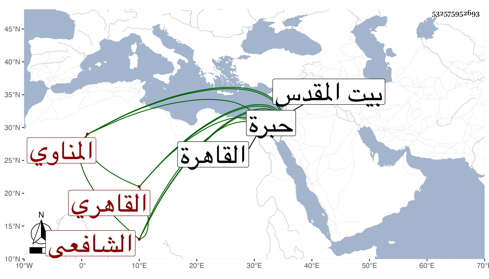

0902Sakhawi.DawLamic.ITO20230111-ara1.EIS1600.532575952693
Biography ID: 532575952693
13
أحمد بن علي بن إبراهيم بن إسماعيل بن محمد الشهاب أبو محمد المناوي الأصل القاهري الشافعي أخو إبراهيم الماضي ومحمد الآتي . ولد تقريبا سنة تسعين بالقاهرة ونشأ بها فحفظ القرآن والتبريزي في الفقه وعرضه على الشمس العراقي وغيره وقرأ في الفقه على الجمال القرافي والمحب المناوي ، وحج في سنة خمس وثلاثين وبعدها وزار القدس والخليل وتكسب بالشهادة إلى أن مات وكان رفيقه فيها أولا الشمس محمد بن قاسم السيوطي فسمع عليه جزءا من تساعيات العز بن جماعة تخريجه لنفسه بسماع الأسيوطي منه وحدث به قرأته عليه وكان صوفيا بخانقة سعيد السعداء وطالبا بالسابقية وغيرها ساكنا مديما للجلوس بحانوت السروجيين بالقرب من سوق أمير الجيوش وربما جلس بغيره ولم يكن بالماهر في صناعته . مات في ليلة الاثنين سابع ذي الحجة سنة سبع وستين رحمه الله .
